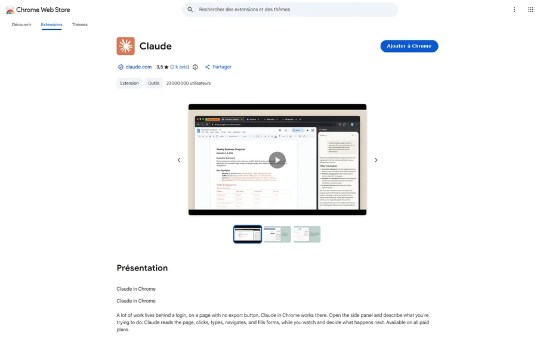
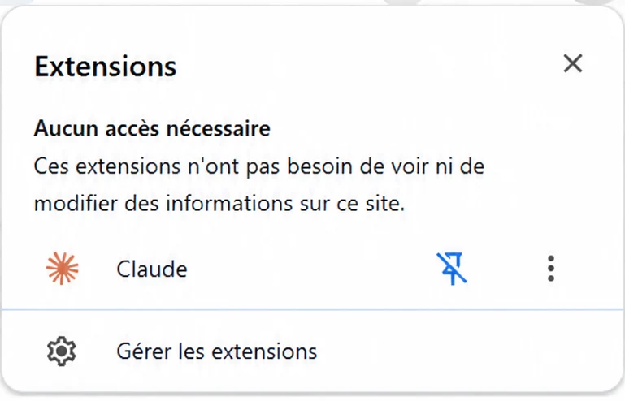
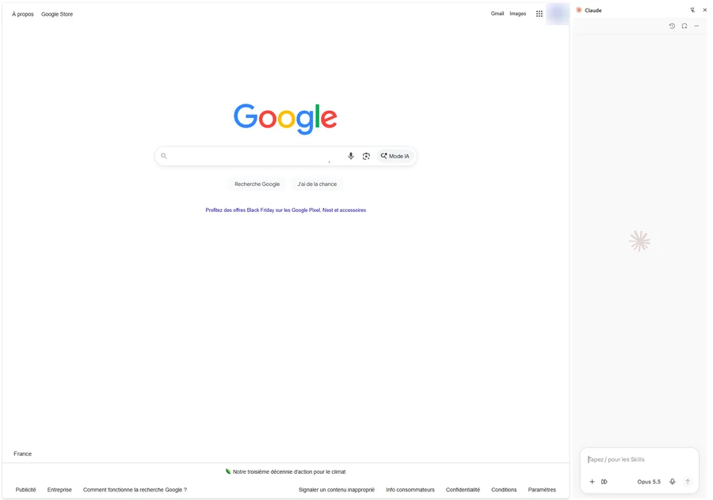
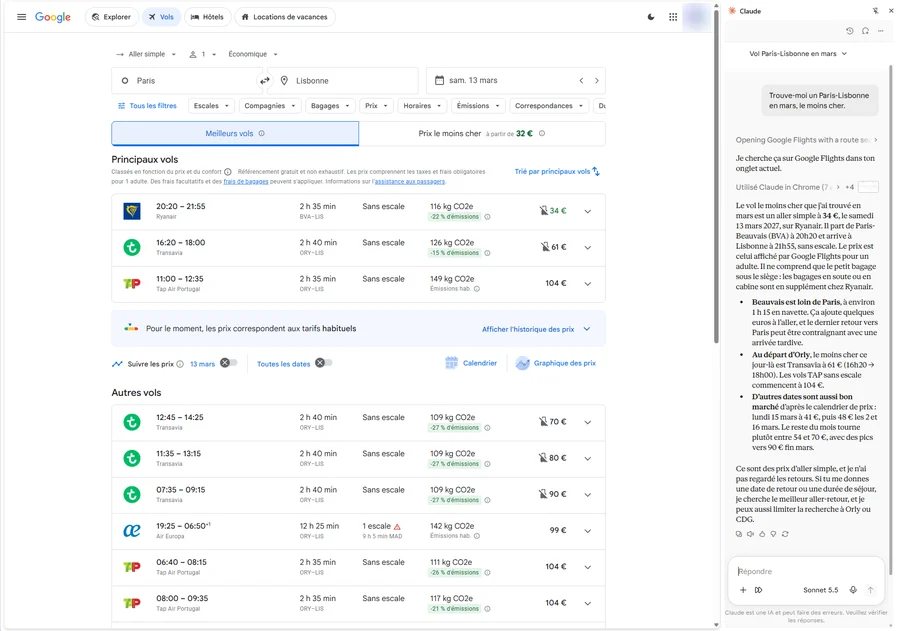
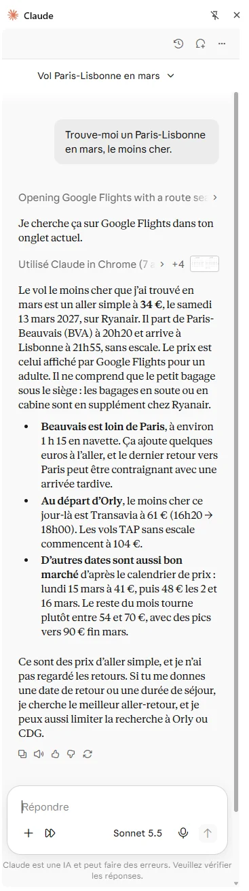

1
Installer l'extension
Chrome Web Store › Claude › Ajouter à Chrome
Cherche Claude (éditeur : Anthropic) sur le Chrome Web Store, puis clique sur Ajouter à Chrome et connecte-toi avec ton compte Claude.

Claude surfe à ta place dans ton Chrome : il voit la page, clique, remplit et compare. Toi, tu gardes la main.

Claude dans Chrome (Claude in Chrome) est l'extension officielle d'Anthropic pour Google Chrome. Dans un panneau à droite, Claude lit la page, clique, remplit les formulaires et navigue d'un onglet à l'autre à ta place, pendant que tu regardes. Tu lui donnes une mission en une phrase, il s'occupe des clics.
Il ouvre les pages, tape dans les champs, clique sur les boutons et compare ce qu'il trouve. Tu peux lui donner plusieurs onglets à la fois (groupe d'onglets de Claude).
Chrome sur ordinateurPar défaut (Approuver automatiquement), Claude vérifie chaque action et s'arrête quand il a besoin de toi. Tu peux passer en Approuver manuellement pour valider chaque étape, et reprendre la main à tout moment.
Avec ta permissionEnregistre une demande en raccourci (tape « / » pour la relancer) et programme-la avec l'icône horloge en haut du panneau.
Selon la version du panneauTout se passe dans Google Chrome sur ton ordinateur, connecté à ton compte Claude payant.
Cherche Claude (éditeur : Anthropic) sur le Chrome Web Store, puis clique sur Ajouter à Chrome et connecte-toi avec ton compte Claude.

Clique sur l'icône puzzle en haut à droite de Chrome, puis sur la punaise à côté de Claude : l'icône reste dans ta barre d'outils.

Un clic sur l'icône Claude ouvre le panneau à droite. Il reste ouvert pendant que tu navigues.

Écris ta demande comme à une personne. Ici : « Trouve-moi un Paris-Lisbonne en mars, le moins cher. » Claude ouvre les sites, entre les dates et compare.

Il te présente le meilleur vol trouvé. Pour réserver, c'est toi : il ne paie jamais à ta place.

« Trouve-moi le Paris-Lisbonne le moins cher en mars » : il passe d'un comparateur à l'autre et te résume les meilleures options.
Inscription, demande de devis, formulaire administratif répétitif : il remplit les champs, tu relis avant d'envoyer.
Dans ta messagerie web : repérer les mails importants, archiver les newsletters, préparer des brouillons.
Mets plusieurs onglets dans son groupe : il en tire un résumé ou un tableau comparatif.
Une vérification à faire chaque semaine (prix, disponibilité, tableau de bord) : enregistre-la en raccourci et planifie-la.
Les autres IA ont aussi leur agent dans le navigateur, mais pas toujours en France.
Bon pour : faire agir l'IA dans ton propre Chrome, avec tes sessions, en gardant la main.
Bon pour : l'extension lit la page et les onglets ; les tâches d'agent passent par l'appli de bureau. Le navigateur Atlas a été arrêté le 9 août 2026.
Bon pour : intégré directement à Chrome, mais pas encore disponible en France ni dans l'Union européenne.

Chaque vidéo RepoPop Décode t'explique une fonction de ton IA en moins d'une minute, avec son kit comme celui-ci.